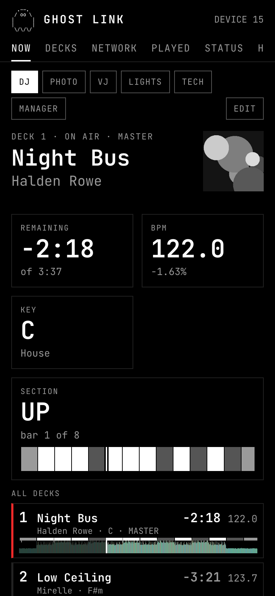
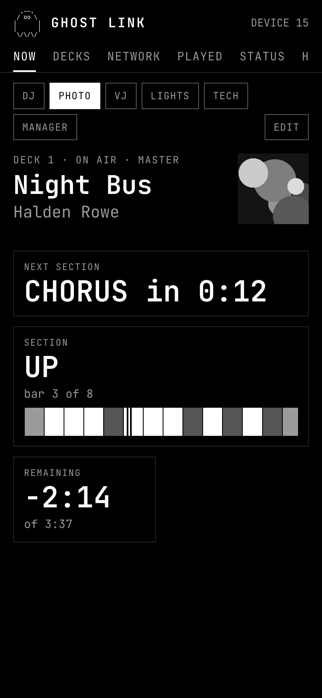
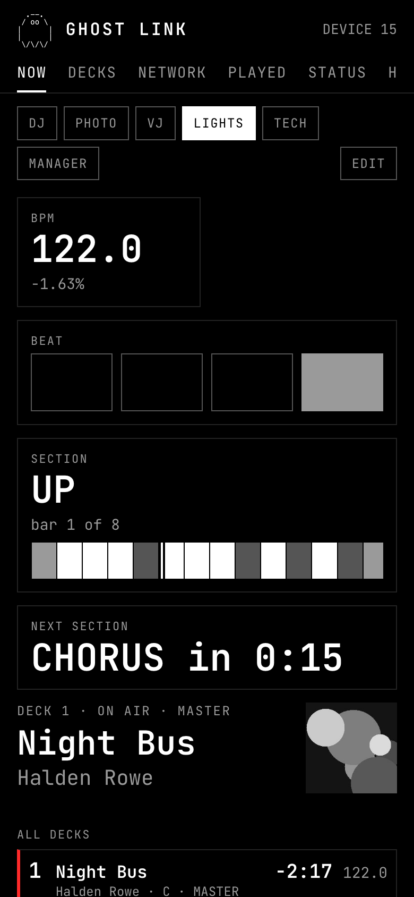
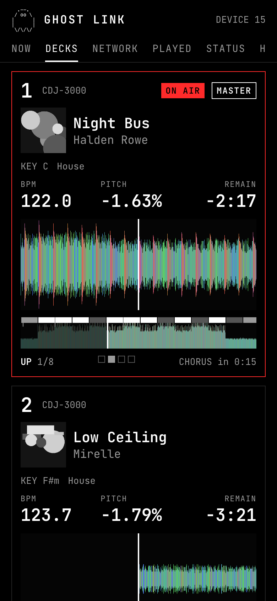
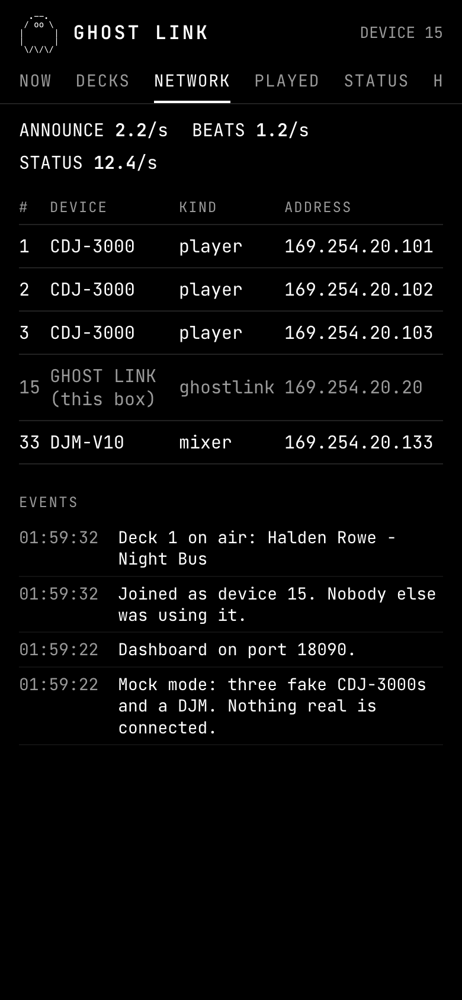
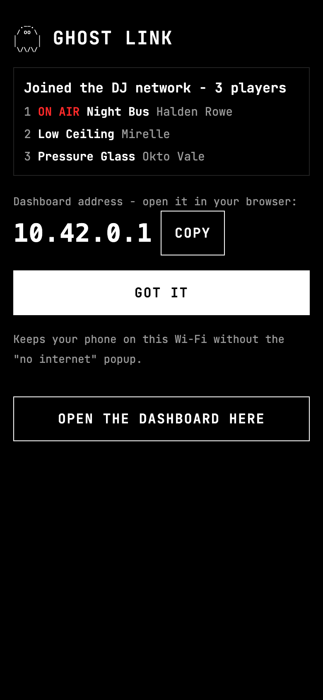

IT ONLY LISTENS
It reads what the players say. Out of the box it never sends a command to a player or mixer. Deck controls stay off unless you turn them on.
Every deck in the booth, live on any phone in the room.
A small box that plugs into the DJ network. Anyone in the room opens it in their phone's browser: track, BPM, time left, waveforms, and when the next chorus hits. It only listens.
PRO DJ LINKLISTEN-ONLYNO APPNO INTERNET
01 IN
CDJs, XDJs and DJM mixers share what they're doing over PRO DJ LINK. GHOST LINK sits on the same switch and listens.
Run a cable from the box to a spare port on the DJ network switch.
Plug in power. The box finds the players and mixer by itself.
On your phone, join GHOST LINK. The dashboard pops up. Share it with the room.
Got venue Wi-Fi? Save it once and the box joins it on the next visit. No internet needed either way. Getting started, step by step.
02 THE BOX
03 OUT · YOUR PHONE
What each person in the room gets. One box, a view for every job. Pick yours on the NOW tab. Anyone can see everything and rearrange their own screen.






SWIPE FOR MORE →
04 OUT · THE DESK WINDOW
Keep it open in the corner of the screen next to Resolume or the lighting software. Every deck fits; it picks a layout for the window's size.
05 OUT · THE CREW
"LIGHTS ON in 2", "THE DROP", "LAST CALL": anyone with the crew code sends one, everyone sees the same countdown. Send a crew call.
Nobody has to be staring at the decks. With HARD STOP, the booth countdown panel, both know the lineup and the cutoff.
06 OUT · THE ROOM
For venues and managers: set it up once per room. It runs the night by itself and keeps the paperwork.
END OF NIGHTTHE BLUE ARCH
ON THE DECKSTICK · LIL TICK · TICK JR
BEST BLENDHarbour Lights → Second Wind
MUSIC OFFON TIME
AND THE GHOST
Calm in a breakdown, bigger on the drop: over 30 moves, picked by the part of the track and the tempo, a new one every 4 bars. Tap him. Turn him off any time.
HIS FACE IS THE STATUS LIGHT
Small games played on the music that's actually on, with one high-score board for every phone on the box. No password.
PLAYS WELL WITH
PRO DJ LINK HARD STOP RESOLUME GRANDMA3 QLAB OBS CHAMSYS MAGICQ AVOLITES TITAN MADRIX QUICKSHOW OSC · ABLETON LINK · MIDI CLOCK
Each one is off until you turn it on. Each page says what's been tried on real gear and what hasn't.
SAFETY
It reads what the players say. Out of the box it never sends a command to a player or mixer. Deck controls stay off unless you turn them on.
It joins on a spare number, 7 to 15. If anything else needs that number, it backs off by itself. It never fights.
The system is read-only. Pulling the power can't hurt it. Plug it back in and it comes back up.
Controls are password-locked. Watching is open to anyone on the Wi-Fi. Every night is recorded on the box, so you can replay it later.
SPEC SHEET WHAT IT SHOWS
FAQ
PRO DJ LINK players and mixers: CDJs, XDJs and DJMs on the DJ network. Tested on XDJ-XZ and CDJ-3000 setups.
No. Any phone browser. Join the Wi-Fi and it opens.
No. Everything runs on the box, in the booth.
From the PRO DJ LINK network your players and mixer already use to talk to each other: what's loaded, playing and on air, tempo, beats, and the track details the players share (title, artist, key, waveform and sections from rekordbox analysis). GHOST LINK reads it with beat-link, an open-source library by Deep Symmetry that was built by studying that network, the same way Beat Link Trigger works. Pioneer DJ / AlphaTheta haven't published this protocol and haven't certified GHOST LINK, so a player firmware update can change something before we catch up. It doesn't copy or read your music files, doesn't need rekordbox running, and stores only what went on air.
Not unless you ask it to. Out of the box it listens to the network and never sends commands to the players; deck controls (stop, play, load) stay off unless you turn them on. If anything needs its spot, it steps aside.
Nothing breaks. The system is read-only, so plug it back in and it comes back up.
It's not for sale yet. Get on the list and we'll reach out when units are ready.
WAITLIST
Not for sale yet. Tell us who you are and we'll reach out when units are ready.